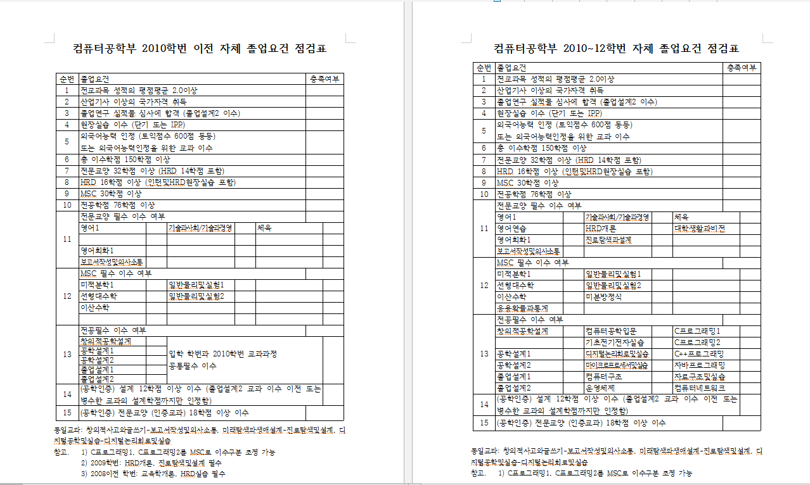
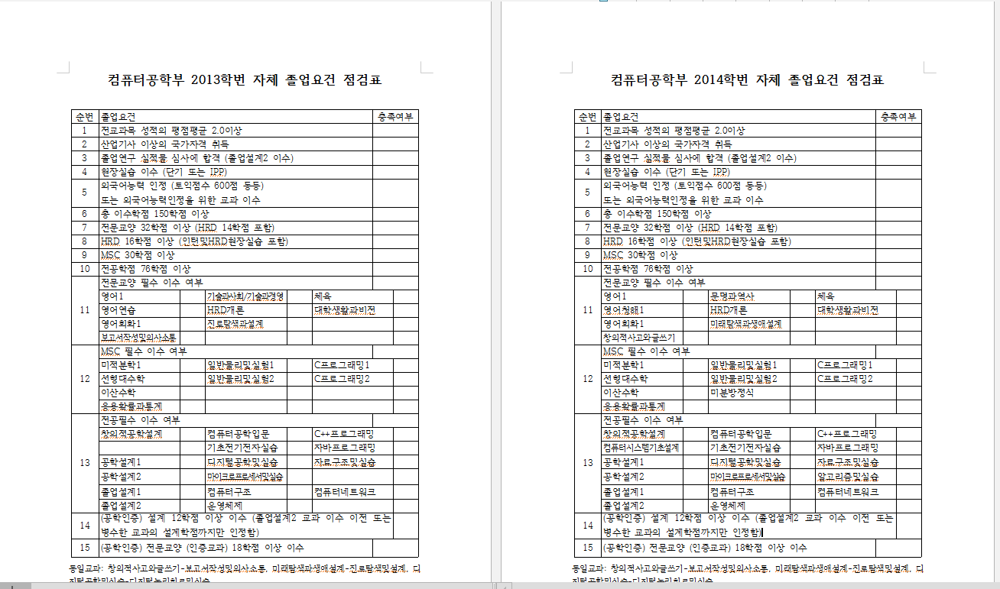

layout:post title: "학년별 졸업 여건 확인해보기" date: 2015-05-25 13:30:10 category: blog
tags: [markdown, workflow, blog, wiki, email]
#학년별 졸업여건 확인해보기
09 10~12 학번

먼저 09이전과 10 학번은 학부가 변화된 시기로 졸업요건이 많이 복잡하다. 09이전 학번은 10년도와 09년도 대학요람에 나와있는 과목들중 '필수로 겹치는'
과목들을 먼저 필수로 들어야된다. 또한 이시기에 많은 과목들이 사라졌는데 이러한 과목들은 재이수가 불가능하므로 학점이 많이 낮다면 다른과목을 보충해서
듣는 것을 추천한다. 나머지는 선택적으로 들으면 되는데 이때 졸업 점검표에 나와있는 과목들 또한 필수 이므로 교양을 선택할때 이러한 필수 과목을 고려하여
짜는 것이 중요한것 같다. 각각의 필수 선택은 보통 필수->선택으로는 넘길수 있는데 (예를들어 msc필수->msc선택 전공필수->전공선택) 특이하게 교양과목의
경우 교양필수과목이 HRD과목이 되어 못듣는 경우가 발생되므로 이시기 학번들만 교양선택을 교양 필수로 바꿀수 있다고 한다.
10~12 학번의 경우 c1 c2 과목이 전공이므로 msc 과목에 신경을 써야된다. 특히 미방이 필수이며 msc 과목들은 1학기와 2학기에 열리는게 다른게 상당히 있으므로 꼭 신경 써서 먼저 채우는 것을 추천한다. 사실 c1 c2 과목을 msc로 변경이 가능 하지만 나와있는 커리큘럼을 맞추는 것이 편하고 또한 우리과의 경우 전공과목 개설이 시간대가 겹치는 경우가 많아 전공 과목 또한 무조건 들으려고 해서 들을 수가 없는 경우가 많으므로 잘 생각 해서 졸업요건을 채워야 된다.
13/ 14학번이후

13학번과 14학번의 경우 c1 c2 과목이 다시 msc과목이 되었고 상대적으로 전공이 많아 졌다. 다른점은 기술과사회/경영 과목과 문명과 역사 또한 우리가 듣고있는
컴퓨터 시스템 기초 설계 과목과 알고리즘의 유-무이다. 하지만 전공이 76학점을 채워야 하며 위에서 언급했듯이 전공과목 자체가 겹치는 시간대가 많으므로
가장 먼저 고려해서 시간표를 전공에 맞춘 후 나머지 교양과 msc 과목을 선택하는 것이 좋다.
공통으로 고려해야될점들
| |전공 | MSC | HRD | 전문교양| |----|:---------------------------:|:---:|:---:|--------:| |필수|학번별로 다름(필수+선택=74+2)| 24 | 4 | 9 | |선택|학번별로 다름(필수+선택=74+2)| 6 | 10 | 9 |
먼저 졸업여건 학점 구분을 보면 총 이수학점 150학점에 전문교양 32학점 HRD 16학점이상, MSC30학점이상 전공 76학점 이상으로 써있다. 그러면 여기서 의문점이 드는데 32+16+30+76=154점이 아닌가? 할수가있다. 여기서 HRD16학점은 사실 교양에 포함된것으로 전문교양 18학점(필수9 선택9) HRD 14학점(필수4 선택10) 으로 구성되어있다. 그렇다면 '나머지 HRD 2학점은 뭘까?' 우리학과는 인턴이 필수이다. 이 인턴을 통해 2학점을 얻을 수 있고 이것은 사실 전공으로 들어간다. 따라서 16학점으로 구분되어있지만 사실 우리는 14학점만 수업으로 듣고 나머지 2학점은 인턴으로 채우며 이것은 다시 전공으로 들어가게 되어 전공은 74학점을 수업으로 들으면 되는 것이다. 그러면 32+30+74+2=138 즉 12학점이 남는데 이것은 자유전공으로 아무거나 자신이 원하는 과목을 들으면 된다.
또한 고려해야되는 것이 설계점수로 사실 지금 현재 학년들은 이 시스템기초설계가 3학점이나 주기 때문에 이런점을 걱정안해도 되지만 나머지 학번들은 자신이 듣는 과목들이 설계점수를 주는게 있는가? 홖인해보고 12학점을 채워야된다. 여기서 모두가 듣는 공학설계와 졸업설계는 각각 1 1 2 2 총 6학점을 주므로 결국 학생들이 채워야하는 점수는 6학점이다. 이때 또 주의해야할 점들이 있는데 이러한 설계과목들은 년도별로 주다 안주다 하는 이상한(?) 시스템이라 수강신청 전에 미리 교과목에 '설' 점수가 있는가 확인해보는것이 중요할 것이다. 실제로 우리조에는 설계점수 '1학점'때문에 다니시는 분이 한분있다 OTL...
layout:post title: "조원들이 경험으로 말하는 과목들"
date: 2015-05-25 13:30:10
#미리 알아보고 점수따자!
MSC
사실 MSC는 들을게 한정되어 있다. 최근 14학번은 미방까지 필수이므로 물리 1,2 C프로그래밍 1,2 응용확통, 미적1, 선형대수학, 이산수학. 따라서 과목보다는
교수님을 잘 만나는게 좋다. 각각 과목마다 겪어본 경험들을 바탕으로 추천해 보겠다.
1.물리
-추천: 이미리 교수님, 신지식 교수님
-글쎄: 김광철 교수님
사실 물리는 '정교수' 님이 빡세다. 과제가 많으며 (메이플TA+연습문제별도) 시간 강사분들+ 여자 교수님들이 점수를 좀 잘주는 편이고
수업이 조금 널널하다. '정교수'님 분반이 유리한 부분은 '정교수'님이 시험문제를 대부분 출제 하시므로 중요하게 여기시는 부분을 잘 캐치하면
시험에 유리할 수 있겠지만... 이게 가능한 사람은 그냥 공부를 잘하는 사람일 것이다.. OTL...
또한 중요한점은 분반을 잘봐야된다. 내가 신청하는 분반이 어디 학과가 중점으로 개설되는가? 를 잘봐야된다. 사실 우리 컴공은 수학이든 물리든
다른 과에 비하면 약한게 사실이다. 그나마 정통쪽이 할만하고 제일 좋은건 그냥 우리 컴공과와 같이 듣는게 최고다. 사실 이 글을 읽는 다는 것은 거의
물리 재수강 학생들의 경우이므로 점수를 위해서는 꼭 기계 메카 이런과는 필수적으로 피하자. 특히 계절학기에는 기계 메카 고학번들이 학점 따러
재수강 하는 경우가 많으므로 '학점'을 잘받고 싶다면 계절학기도 피하는게 좋다.
2.수학
-추천: 김용일 교수님 한성휴 교수님 송대진 교수님
-글쎄: 허주현 교수님 박원우 교수님 최용빈 교수님
수학 과목은 정말 교수님이 중요하다. 특히 허주현 교수님은 과제, 수업 분위기, 수업내용 모두가 사실 비추천을 주고 싶다. 또한 박원우 교수님과 최용빈 교수님은 성적을 잘 안주시는 거로 유명하시다.
추천 과목 교수님들 중 일단 김용일 교수님은 잘가르치셔서 수업내용 이해가 아주 잘되는 거로 소문나있다. 이산 수학은 한성휴 교수님을 추천하는데
수업내용도 재미있고 사실 다른분이 '악평'이 많아서 이분에게 듣는 것을 추천한다. 송대진 교수님은 젊은 교수님으로 보통 수치해석에서 볼 수 있는데 2014학번 부터는 30학점을 필수과목만 채우게 되므로 수치해석을 안들어도
되므로 신경안써도 될 것이다. 수치해석은 과목 자체가 수학적인 부분이 약간 덜 들어가며 간단한 프로그래밍을 하거나 텀프 발표를 하는데 우리 컴공과
학생들에 전반적으로 유리한 과목이라 생각하여 추천에 넣었다. 가장 중요한건 물리와 마찬가지로 과목이 어느 학과 학생들이 주로 이루어 져있는가를 파악
해서 기계, 메카를 피하는게 최고라는 것이다. 또한 응용확통은 '디자인'과도 들으므로 이 '디자인'과와 같이 듣는게 가장 점수 따기엔 가장 좋다.
3.C프로그래밍
이 부분은 전공부분이라 넘어가려 했으나 혹시나 계절학기로 다른 학과와 공통으로 듣는 프로그래밍기초를 C1대신 수강할까 하는 사람이 있을까해서
넣어 보았다. 컴공이라 분명 재수강일 경우 유리하며 점수 따기도 좋다. 하지만 여기서 무조건 피해야하는 교수님중 한분이 박흥재 교수님이다.
F폭격기로 유명하시며 상대평가와 절대평가를 합쳐서 학생들의 점수를 가장 낮게 주시려는 교수님이라 무조건 피하는게 최고다. 그리고 우리학과에 유리
하긴 하지만 언제나 우리의 적인 메카. 기계학생들도 기본적으로 배우는 과목이라 무조건 A+ 을 얻을 꺼라는 생각은 버리는것이 좋다.
교양과목
교양 과목은 크게 HRD와 나머지 교양으로 나눌 수 있다. 사실 수많은 교양과목이 있고 모든 것을 경험 해볼 수 없었지만 그래도 우리의 경험들을 바탕으로
전반적으로 적어보았다.
-정치학의 이해- 전반적으로 산경과가 많이 들으며 조과제가 30분이상의 발표가 있으며 점수따기가 힘들다.
-한국인과 한국사회- 이과목이 제일 낚시과목이다. 앞에 (외국인을 위한) 이 문구가 빠져 있으며 외국인을 위한 과목이다. 따라서 수업을 모두 영어로
진행하며 외국인과 팀을 짜서 발표를 하는데 이게 정말 복불복이다. 한국말을 아예 못하는 외국인과 진행할시 정말 힘들며 수업자체도 전반적으로 이해하기
힘들다.
-대중 문화 읽기 - 과목 자체는 재미있다. 주교제를 가지고 매번 수업을 들은후 시험을 쪽지시험 마냥 보는데 수업만 졸지 않고 들어서 쪽지 시험만 잘보면
점수따기가 좋다. 특히 중간/기말 시험이 없고 대신 어떤 한 주제를 가지고 발표로 대체를 하는거라 학점은 채워야되는데 시간이 없는, 이런 학생들에게
추천한다.
-사회학 - 시험이 없으며 주어진 주제에 대한 독후감 3번과 수업끝나고 쓰는 수업보고서 5번으로 평가를 하는데 주로 보고서를 평가하며 수업시간에만
잘 집중하면 점수를 잘 받을 수 있는 과목이다. 교수님은 한분이시다.
-천안학 - 말 그대로 천안에 대해 배우는 과목으로 시험이 없고 UCC 한편을 제작 하는 것을 제외하면 크게 부담없는 수업으로 학생들이 매번 50명 이상 싸인을
받으러 오는 과목. 무조건 듣는 것이 좋은 것 같다.
-환경과 생태 - 매시간 환경에 관한 동영상을 보고 보고서를 제출한다. 경험상 보고서의 내용으로 평가라기 보다는 기본 출결 정도의 체크 느낌이고 수업은
약간 지루하지만 시험 자체는 빈칸 채우기 형식이며 점수를 후하게 주신다. 교수님은 한분이시다.
-심리학 - 역시 시험이 없으며 조별과제로 1번의 발표와 이 발표주제에 대한 개인의 보고서와 조별 최종보고서가 끝. 한학기 치고는 정말 널널하게 할 수있는
꿀과목중 하나. 대신 발표 하나로 점수가 크게 갈리므로 신경 써서 해야 한다.
-레크리에이션 - 체육 과목들중 거의 유일하게 교실에서 위주로 하는 수업. 최대한 자기 자신을 어필 하는 사람이 유리하며 소위'나대는' 사람들이 점수
받기 쉽다. 체육 과목임에도 불구하고 '리더쉽'을 중점으로 수업 하며 대신 마지막 기말 기간에 게임을 자체 제작하거나 다른 곳에서 따와서(지니어스같은)
변형< 시켜서 조별로 반 전체를 진행한다. '시험'을 안본다는게 유리하긴 하지만 신경 써야할 것이 은근히 많다. 중간에 자기PR 시간이 있는데 수업 마지막에
이 PR한 사람들중 가장 기억에 남는 사람을 쓰는 시간이 있다. 여기서 상위권에 들은 사람들을 A+ 주는 것으로 예측된다.
-생활과 화학 - 군대에서도 들을 수 있는 교양과목중하나. 보통 계절학기용으로 많이들 듣는 편인데 수업 자체가 이러닝으로 진행 되며 기말고사 한방에 거의
모든것이 달려있어서 약간 부담이 되는 과목 특히 계절학기에는 에-신-화 학과 위주로 개설되므로 점수따기가 정말 힘들다.
점수보다는 학점 채우는 목적일때 추천!
HRD 과목
-HRD개론 - HRD개론은 필수과목으로 가장 중요점은 '정교수'님을 피하는 것이다. 실제로 지난 학기 기준으로 '정교수'님 분반만 중간고사를 보았고 나머지는
보지 않았었다. 이분은 '임세영'교수님이신데 다른 분반과 또 다른점은 토론식 수업이 많고 이상한 타이밍에 쪽지셤을 보는데, 이것저것 피곤한 일이 많으므로
이분만 피하면 된다. 마지막에 '포트폴리오'작성 또한 엄청난 시간을 들여야 하므로 무조건 피하자. 나머지 분들은 비슷하시다고 들었다.
-미래탐색과 생애설계 - 이 과목 또한 필수 과목인데 이과목은 기업 인터뷰가 제일 중요하며 팀별로 하는 활동이 많으므로 교수님/분반 보다는 아는 친구들
끼리 같이가서 팀을 짜서 활동하는게 가장 중요한 것 같다.
-e-learning 개론 - 교수님이 2분이 계시는데 한분은 김원섭 교수님으로 남자 교수님이신데 수업이 약간 지루하고 이론 위주로 하여 좀 빡세다. 반대로는
여자교수님 최명란 교수님이 계시는데 수업이 널널한 대신 조별 발표가 있으며 시험 자체는 빈칸채우기+ 몇문제 안되는 주관식으로 부담없이 할 수 있는 추천
과목이다. 자신이 e-learning 컨텐츠를 만드는것도 있는데 15장에 기본양식이 주어지므로 하루정도면 끝낼 수 있다. 점수를 잘받을 수 있는 과목중 하나.
최명란 교수님을 추천한다.
-현대사회와 직업 윤리 - 호불호가 엄청 갈리는 과목으로 교수님이 정치색이 강하셔서 만약 자신과 반대되는 정치색이라면 많이 피곤할 과목이다. 이과목
은 또한 출결/핸드폰이 정말 중요한데, 결석 한번당 5점이깍이며 지각은 2번당 결석 1번처리를 하고 핸드폰 또한 하다 걸릴시 5점이 깍이는 엄청난 과목이다.
시험은 중간/기말 둘다 있는데 사실 EL 사이트에 올라오는 자료만으로는 공부하기가 힘들며 수업시간에 정말 집중해서 들어야 된다. 과목 자체의 내용은
나쁘지않은 재밌는 과목이지만 자신과 맞지 않는다면 한학기 내내 고생할 수 있다.
-진로상담론 - 교수님이 총 3분이신데 무조건 남자교수님으로 들어야된다. 나머지 2분은 이론 위주의 정말 딱딱하고 재미없는 수업으로 정평이 나있으며
남자교수님은(한상진교수님) 수업 내내 농담도 잘던지시고 전반적으로 학생들을 재밌게 하시려는 성향이 강하다. 시험은 수업중 PPT 를 통해서 내주시는데 이 PPT
를 안올려주신다... 사진을 찍어가서 공부 해야되는데 남자교수님은 수업 자체를 빡세게 진행 안하셔서 범위는 그렇게 많지 않다. 부담없이 들을 수 있는 과목으로
무조건 한상진 교수님 추천!
br>
-창의력 개발 실습 - 이 수업은 주위에서 무조건 김준수 교수님을 추천한다. 시험이 없는 대신 토론 수업위주로 하며 일단 시험이 없다는 자체로 많이 선호
되는 과목이다. 활동위주의 수업이므로 부담없이 들을 수 있는 장점있는 과목.
-기업가 정신과 리더쉽 커뮤니케이션 - 시험이없다. 하지만 호불호가 정말 갈리는 과목. 특히 당신이 모자를 쓰고 다닌다면 절대 들을 수 없는 과목이다.
수업 자체는 토론식 수업 위주이며 2-3주에 한번씩 특강을 들어야되고 수업끝난 뒤 소감문을 1주일에 2-3개정도 써야한다. 특강도 마찬가지. 끝나고는 포트폴리오
작성까지 해야되서 부담이 약간 되지만 중간-기말 시험이 없는 것이 많이 도움이 된다. 유의점은 아까 말했듯이 모자를 절대 쓰면 안되고 수업시간에 유인물
을 안가져올 시 수업에서 쫒겨나는데 이러면 소감문 제출또한 불가능하므로 연쇄적으로 2-3점이 깍이게된다... 이러한 것들만 주의 한다면 나름 꿀과목
-기업내 교육론 - 평범한 수업위주이며 중간에 강사분이 1달간 강의를 하고 조별 과제와 개인 과제가 한개씩 있다. 개인 과제는 기업조사 인터넷 복붙 해오는
것으로 이 기업들중에 하나를 선정해서 조를 정하여 기업내 HRD 전문가와 인터뷰를 하는게 조별 과제이다. 이러닝 또한 들어야되는데 여기서 팁은
'교수설계및 교육방법 이라는 과목의 이러닝과 같으므로 이수업과 병행 하면 좋을 것 같다.
-교수설계및 교육방법 - 이러닝과 오프라인 수업 2개로 이루어져있으며 이러닝은 기말 시험만 보며 기말시험이 80%나 차지한다. 과제는 교수법 설계 과제를 하나
제출 해야되는데 매주 차근차근 따라가기만 하면 쉽게 가능하다. 뭔가를 얻고 싶다면 오프라인 수업을 추천.
전공과목
사실 전공과목 우리학과 특성상 시간표 채우기가 정말 애매하다. 그래서 시간표가 허락하는 한 어지간하면 다 채워 넣는 것이 보통이다. 따라서
필수가 아닌 선택 과목들중 몇개만 소개하고자 한다.
-디지털 신호처리및 실습 - 수학이 많다. 내용 자체는 그렇게 어렵지는 않지만 한번 진도를 못 쫒아가면 계속 뒤쳐질 수 있다. 수업 자체는 널널한 편이며
개인적으로는 추천하는 과목.
-웹프로그래밍 - 사실 사회에 나가서 웹쪽 디자인이나 js , 서버쪽에서 종사하게 될 기회가 많다. 이 과목 또한 그런 의미에서 나중에 큰 도움이 될 것 같다.
추천 과목.
-임베디드 시스템 - 전반적으로 마프와 비슷한 과목으로 하드웨어 과목 특성상 약간 시간을 많이 투자해야 한다. 하드웨어는 솔직히 자신이 좋아 하지 않는 이상
많이 선호되는 과목은 아닌 것 같다.
-인공지능 - 과목이 영어로 수업을 하며 과제가 상당히 어렵다. 또한 마지막에 텀프 발표가 있는데 내용 자체도 어렵고 수업에 항상 집중 해야 따라갈 수 있다.
대신 점수는 잘주신다.
-컴퓨터 비전/로봇비전 - 비전 즉 영상 처리에 대한 과목으로 시험이 이론/실습으로 나누어 져있으며 약간 부담되는 과목이긴하다. 하지만 영상 처리 또한
우리가 사회에 나가서 종사하는 많은 부분 중 하나이므로 미리 들어두면 좋을 거 ㅅ같다.
-데이터통신 - 이게 왜 전공과목이 아닌지 궁금하다.. 컴퓨터 네트워크과목과 비슷하며 수업 자체도 재미있고 기사시험에도 나오는 부분으로 듣는것이 좋다고
생각한다.
-스크립트 프로그래밍- 파이썬을 배우는 과목으로 파이썬 언어 자체가 주요 언어인 c나 자바 등을 제외하면 꽤 많은 사람들이 사용하고 있다. 파이썬 자체는
프로그래밍하기가 편리하고 문법도 기존 C나 자바와 비슷하면서도 단점을 보완한 것 같은 언어이다. 개인적으로 추천.
#마무리
경험상 꿀과목, 특히 시험을 보지 않는 과목들로 소개를 해보았다. 이러한 정보를 미리 알고 가는 것과 그냥 모르고 선택하여 듣는 것은 정말 천지 차이이다. 조원들이 대부분 4학년으로 이러한 경험들이 많아 정보가 많았고 이글을 읽는 여러분에게 도움이 되었으면 한다.